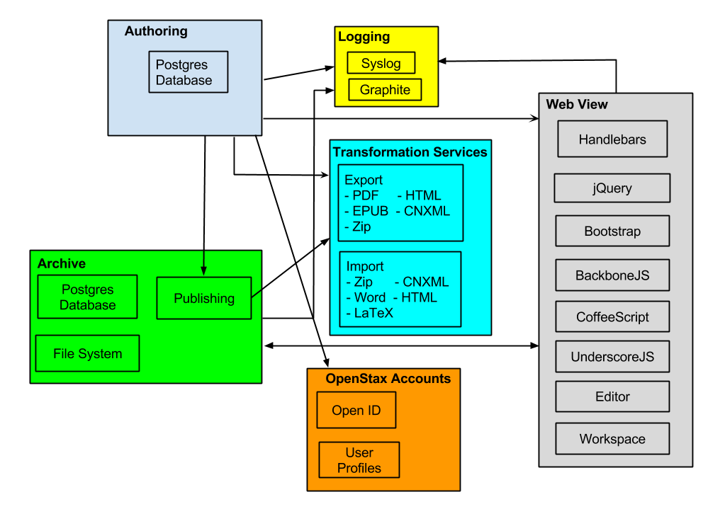

CNX Rewrite Design

Authoring
Authoring consists of all of the components needed for creating CNX content.
Components include
- Editor - the Editor is based on Aloha, an open source HTML 5 editor
- Workspace - Page that allows users to see a list of their content. See initial design.
- Authoring - Storage of unpublished content and resources (media, images, etc.)
- Content is stored in a Postgres database
All of the components have an API that is used for communication between the components
Other services used are
- Logging - centralized logging service
- Authorization (OpenStax Accounts) - an Open ID server and user information repository
- Transformation Services - used to create a preview PDF
- Archive - an API used for publishing content to the CNX Archive
All of the web pages for Authoring are created using the same template frameworks as the Webview.
Archive
The Archive is the repository for published content in CNX.
Components incude
- Postgres - a database server for storing metadata about modules and collections and the content HTML
- File System - the server file system for storing resource files (audio, images, small videos, etc.)
- Publishing - A component that handles API calls to publish content. See the Archive API requirements.
Other services used are
- Logging - centralized logging service
- Authorization (OpenStax Accounts) - an Open ID server and user information repository.
- Transformation Services - Archive API will trigger jobs on Transformatin Services to create the Export files (PDF, EPUB, etc.) for newly published content.
Authorization
Authorization is provided by a shared user component. It supports OpenID and all existing CNX users will be converted to OpenID. USers cann also log in using their existing Google, Facebook or Twitter accounts
Components include
Transformation Services
Transformation Services are used to import files to create content and to export published content in different formats. Each import and export will be wrapped as a separate service that can be monitored and turned on and off without effecting the other services.
Export - export content in the following formats. Exports are stored in the Archive.
- PDF
- EPUB
- Mobi
- Offline HTML zip
- HTML
- CNXML
Import - import the following file types and transform them into HTML for the editor
- Zip - contains HTML and resource files
- HTML
- CNXML
- Word document
- LaTeX zip file - contains tex and resource files
Other services used are
- Logging - centralized logging service
Logging
The Rewrite will have centralized logging to capture events from all components in the system.
Components include
- Syslog - a centralized logging system that captures log information
- Graphite - parses the logs for display. Allows users to filter based on criteria so that logged events can be seen based on a user id, a component, date, etc.
See Logging Design Documention
Webview
The Webview is the display of content in a browser.
Components include
Technologies Used